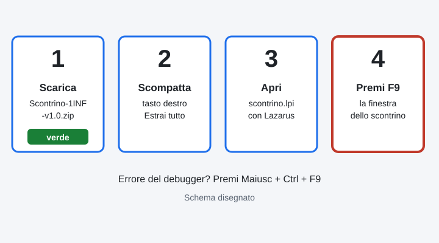
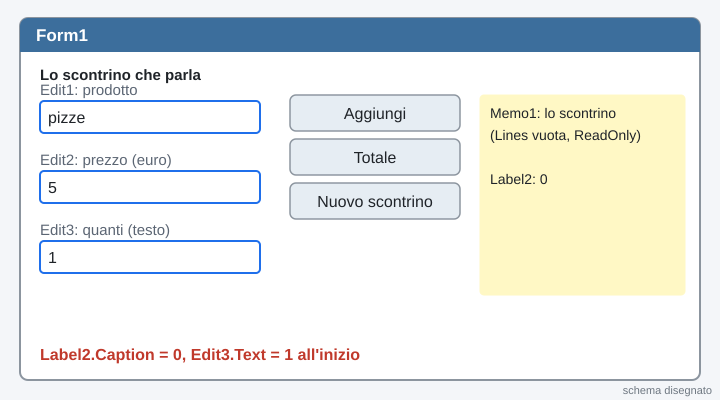
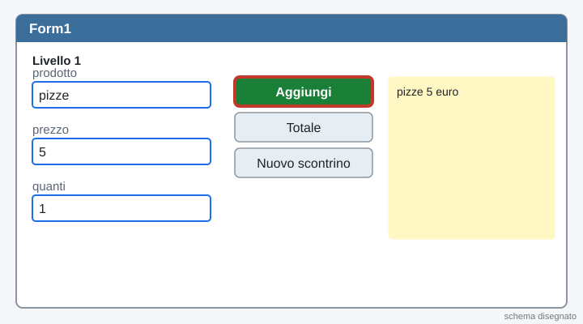
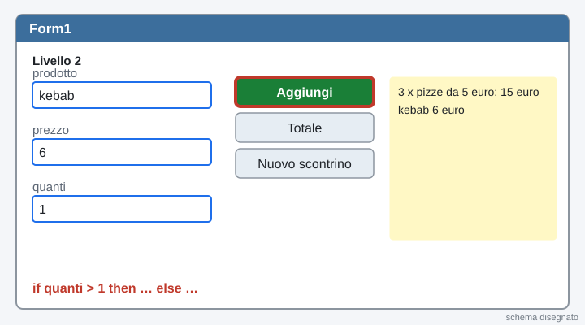
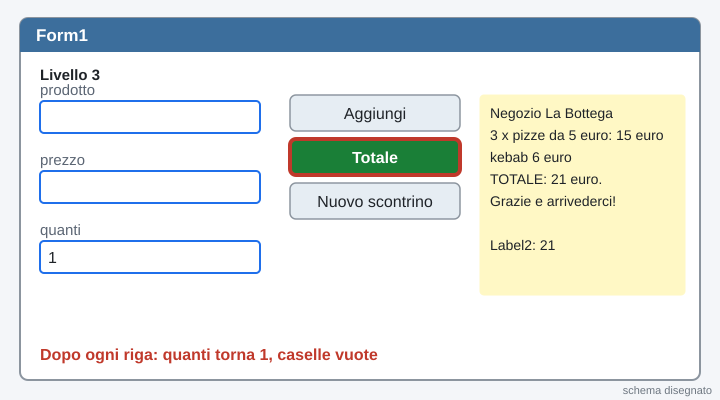
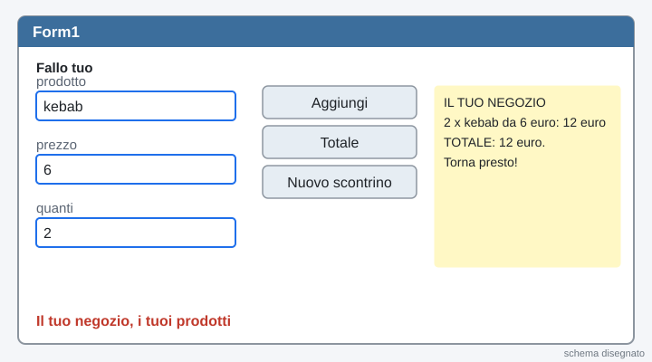
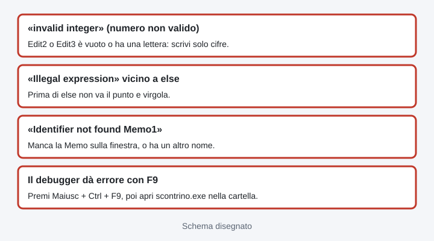

1INF · Laboratorio · venerdì 06/11/2026 · ora 5 (12-13) · Lazarus
Ora 5 · Lo scontrino che parla
الساعة 5 · الإيصال الذي يتكلم
第 5 节 · 会说话的小票
La pagina viene aggiornata spesso durante la lezione: premi F5 per vedere la versione nuova. · اضغط F5 لرؤية النسخة الجديدة. · 按 F5 查看新版本。
Hai un dubbio sul lavoro? Scrivi all'assistente in fondo alla pagina: risponde subito. Il Professore serve per un PC rotto.
Chi sei?
Scrivi nome e cognome: serve al cruscotto e alla consegna.
اكتب الاسم واللقب: تحتاجه لوحة المتابعة والتسليم.
写名字和姓：进度面板和提交都需要。
Il progetto completo, che funziona · المشروع الكامل الذي يعمل · 能运行的完整项目
Scarica il progetto già fatto: lo apri in Lazarus, premi F9 e lo scontrino parla. Poi lo capisci, lo cambi e lo fai tuo.
نزّل المشروع الجاهز: افتحه في Lazarus، اضغط F9 والإيصال يتكلم. ثم افهمه وغيّره واجعله ملكك.
下载做好的项目：在 Lazarus 里打开，按 F9，小票就会说话。然后看懂它，改它，做成你自己的。
Scarica lo zip · نزّل ملف zip · 下载 zipLo zip non si scarica? Scarica i 4 file uno per uno (tasto destro sul bottone, «Salva link con nome», dentro la stessa cartella). · لا ينزل ملف zip؟ نزّل الملفات الأربعة واحداً واحداً. · zip 下不了？把 4 个文件一个一个下载。
unit1.pasunit1.lfmscontrino.lpiscontrino.lprIl codice completo di unit1.pas · الكود الكامل · 完整代码
In Lazarus: apri unit1.pas, seleziona tutto (Ctrl + A), incolla (Ctrl + V). Il progetto deve avere la finestra con i nomi giusti (passo 2).
unit Unit1;
{ 1INF - Lo scontrino che parla. Progetto Lazarus completo (livelli 1, 2, 3).
Somme di stringhe, StrToInt, IntToStr e un if: niente cicli.
Memo1.Lines.Add scrive UNA riga nuova per volta nello scontrino. }
{$mode objfpc}{$H+}
interface
uses
Classes, SysUtils, Forms, Controls, Graphics, Dialogs, StdCtrls;
type
{ TForm1 }
TForm1 = class(TForm)
Button1: TButton;
Button2: TButton;
Button3: TButton;
Edit1: TEdit;
Edit2: TEdit;
Edit3: TEdit;
Label1: TLabel;
Label2: TLabel;
Label3: TLabel;
Label4: TLabel;
Label5: TLabel;
Memo1: TMemo;
procedure Button1Click(Sender: TObject);
procedure Button2Click(Sender: TObject);
procedure Button3Click(Sender: TObject);
private
public
end;
var
Form1: TForm1;
implementation
{$R *.lfm}
{ TForm1 }
{ Livello 1: riga semplice. Livello 2: if con la x. Livello 3: totale in Label2 e reset delle caselle }
procedure TForm1.Button1Click(Sender: TObject);
var
riga: string;
quanti, prezzo, costo, totale: Integer;
begin
quanti := StrToInt(Edit3.Text);
prezzo := StrToInt(Edit2.Text);
costo := quanti * prezzo;
if quanti > 1 then
riga := Edit3.Text + ' x ' + Edit1.Text + ' da ' + Edit2.Text + ' euro: ' + IntToStr(costo) + ' euro'
else
riga := Edit1.Text + ' ' + Edit2.Text + ' euro';
Memo1.Lines.Add(riga);
totale := StrToInt(Label2.Caption) + costo;
Label2.Caption := IntToStr(totale);
Edit3.Text := '1';
Edit1.Clear;
Edit2.Clear;
Edit1.SetFocus;
end;
{ Livello 3: la riga del totale }
procedure TForm1.Button2Click(Sender: TObject);
begin
Memo1.Lines.Add('TOTALE: ' + Label2.Caption + ' euro. Grazie e arrivederci!');
end;
{ Livello 3: nuovo scontrino (Fallo tuo: metti il nome del TUO negozio) }
procedure TForm1.Button3Click(Sender: TObject);
begin
Memo1.Clear;
Memo1.Lines.Add('Negozio La Bottega');
Label2.Caption := '0';
end;
end.

1Vinci subito: fai partire lo scontrino
فوز سريع: شغّل الإيصال
马上成功：让小票跑起来
Scarica lo zip qui sopra (bottone verde). Tasto destro sul file, Estrai tutto. Apri la cartella Scontrino-1INF e fai doppio clic su scontrino.lpi: si apre Lazarus. Premi F9: scrivi pizze, 5, 3 e premi Aggiungi riga. Se il debugger dà errore, premi Maiusc + Ctrl + F9.
نزّل ملف zip من الأعلى (الزر الأخضر). زر أيمن على الملف، Estrai tutto. افتح المجلد Scontrino-1INF وانقر مرتين على scontrino.lpi: يفتح Lazarus. اضغط F9: اكتب pizze و 5 و 3 واضغط Aggiungi riga. إذا أعطى debugger خطأ اضغط Shift + Ctrl + F9.
下载上面的 zip（绿色按钮）。右键点文件，Estrai tutto。打开文件夹 Scontrino-1INF，双击 scontrino.lpi：Lazarus 会打开。按 F9：写 pizze、5、3，按 Aggiungi riga。如果调试器报错，按 Shift + Ctrl + F9。
Poi leggi il codice e rifallo tu: nei passi dopo costruisci lo scontrino da zero, un livello alla volta.
ثم اقرأ الكود وأعد صنعه بنفسك: في الخطوات التالية تبني الإيصال من الصفر، مستوى بعد مستوى.
然后读代码，自己再做一遍：后面的步骤里，从零开始一级一级做小票。
2La finestra della cassa (progetto tuo)
نافذة الصندوق
收银台窗口
Lazarus: Progetto, Nuovo progetto…, Applicazione, OK. Subito File, Salva tutto in Documenti, cartella nuova scontrino-parla.
Lazarus: Progetto، Nuovo progetto…، Applicazione، OK. فوراً File، Salva tutto في Documenti، مجلد جديد scontrino-parla.
Lazarus：Progetto，Nuovo progetto…，Applicazione，OK。马上 File，Salva tutto，保存在 Documenti 里新建的文件夹 scontrino-parla。
Metti 3 Edit, 3 Button, 1 Label e 1 Memo. Edit1 = il prodotto (pizze), Edit2 = il prezzo in euro (5), Edit3 = quanti. Caption dei bottoni: Aggiungi riga, Totale, Nuovo scontrino.
ضع 3 Edit و 3 Button و Label واحداً و Memo واحداً. Edit1 = المنتج (pizze)، Edit2 = السعر باليورو (5)، Edit3 = الكمية. كتابات الأزرار: Aggiungi riga، Totale، Nuovo scontrino.
放 3 个 Edit，3 个 Button，1 个 Label 和 1 个 Memo。Edit1 = 商品（pizze），Edit2 = 价格，欧元（5），Edit3 = 数量。按钮的字：Aggiungi riga，Totale，Nuovo scontrino。
Trascina una Memo (scheda Standard, in alto) sulla finestra, grande, a destra: è lo scontrino. Nell'Ispettore oggetti: Name = Memo1; clicca i tre puntini di Lines e svuotala (cancella «Memo1»), OK; ReadOnly = True; ScrollBars = ssAutoVertical.
اسحب Memo (من تبويب Standard في الأعلى) إلى النافذة، كبيرة، على اليمين: هذا هو الإيصال. في Ispettore oggetti: Name = Memo1؛ اضغط النقاط الثلاث عند Lines وأفرغها (امسح «Memo1»)، OK؛ ReadOnly = True؛ ScrollBars = ssAutoVertical.
把 Memo 拖（Standard 选项卡，在上面）到窗口里，大一点，放右边：这就是小票。在 Ispettore oggetti 里：Name = Memo1；点 Lines 的三个点，清空（删掉「Memo1」），OK；ReadOnly = True；ScrollBars = ssAutoVertical。
Label2 = il totale: nella sua Caption scrivi 0. In Edit3, proprietà Text, scrivi 1. Il 0 e l'1 sono testi, come tutto quello che c'è nelle caselle.
Label2 = المجموع: في Caption اكتب 0. في Edit3، الخاصية Text، اكتب 1. الـ 0 والـ 1 نصوص، مثل كل ما في الخانات.
Label2 = 总数：在它的 Caption 里写 0。在 Edit3 的 Text 里写 1。0 和 1 是文字，输入框里的东西都是文字。

3Livello 1: una riga semplice
المستوى 1: سطر بسيط
第 1 级：一行简单的
Doppio clic su Aggiungi riga. Scrivi una riga sola: Memo1.Lines.Add( … ); aggiunge una riga nuova in fondo alla Memo. Con pizze e 5 deve uscire: pizze 5 euro.
نقر مزدوج على Aggiungi riga. اكتب سطراً واحداً: Memo1.Lines.Add( … ); يضيف سطراً جديداً في آخر Memo. مع pizze و 5 يجب أن يخرج: pizze 5 euro.
双击 Aggiungi riga。只写一行：Memo1.Lines.Add( … ); 在 Memo 最后加一个新行。用 pizze 和 5，要出现：pizze 5 euro。
Aiuto 1: l'idea
Dentro le parentesi unisci i pezzi con il +: Edit1.Text + ' ' + Edit2.Text + ' euro'. Il testo tra apici resta com'è.
داخل القوسين اربط القطع بـ +: Edit1.Text + ' ' + Edit2.Text + ' euro'.
括号里用 + 把几块连起来：Edit1.Text + ' ' + Edit2.Text + ' euro'。
Aiuto 2: il codice completo del livello 1
procedure TForm1.Button1Click(Sender: TObject);
begin
Memo1.Lines.Add(Edit1.Text + ' ' + Edit2.Text + ' euro');
end;
4Livello 2: se sono di più, la x
المستوى 2: إذا كانت أكثر، الـ x
第 2 级：如果不止一个，加 x
if … then … else … = «se … allora … altrimenti …». Il computer sceglie una delle due strade. Esempio: if quanti > 1 then riga := 'tante' else riga := 'una'; Prima di else non c'è mai il punto e virgola.
if … then … else … = «إذا … فـ … وإلا …». الحاسوب يختار طريقاً من اثنين. مثال: if quanti > 1 then riga := 'tante' else riga := 'una'; قبل else لا توجد فاصلة منقوطة أبداً.
if … then … else … = 「如果 … 就 … 否则 …」。电脑在两条路里选一条。例子：if quanti > 1 then riga := 'tante' else riga := 'una'; else 前面从来没有分号。
Se la quantità è più di 1 la riga ha la x: 3 x pizze da 5 euro: 15 euro. Se è 1 la riga resta semplice: kebab 6 euro. Serve una variabile riga: string. Attenzione: il «3» e l'«1» nelle caselle sono testi: per il conto serve StrToInt(Edit3.Text).
إذا كانت الكمية أكثر من 1 يكون في السطر x: 3 x pizze da 5 euro: 15 euro. إذا كانت 1 يبقى السطر بسيطاً: kebab 6 euro. نحتاج متغيراً riga: string. انتبه: الـ «3» والـ «1» في الخانات نصوص: للحساب نحتاج StrToInt(Edit3.Text).
数量大于 1，这一行就有 x：3 x pizze da 5 euro: 15 euro。数量是 1，这一行就简单：kebab 6 euro。需要一个变量 riga: string。注意：输入框里的「3」和「1」是文字：算数要用 StrToInt(Edit3.Text)。
Prova: 3 pizze da 5 (riga con la x), poi 1 kebab da 6 (riga semplice).
جرّب: 3 pizze بـ 5 (سطر بـ x)، ثم 1 kebab بـ 6 (سطر بسيط).
试一试：3 个 pizze，每个 5（有 x 的一行），然后 1 个 kebab，每个 6（简单的一行）。
Aiuto 1: l'idea
Due StrToInt (quanti e prezzo), poi costo := quanti * prezzo. Poi l'if sceglie come scrivere la variabile riga. Alla fine: Memo1.Lines.Add(riga);
StrToInt مرتين (quanti و prezzo)، ثم costo := quanti * prezzo. ثم if يختار كيف نكتب riga. في الآخر: Memo1.Lines.Add(riga);
两个 StrToInt（quanti 和 prezzo），然后 costo := quanti * prezzo。然后 if 选择 riga 怎么写。最后：Memo1.Lines.Add(riga);
Aiuto 2: il codice completo del livello 2
procedure TForm1.Button1Click(Sender: TObject);
var
riga: string;
quanti, prezzo, costo: Integer;
begin
quanti := StrToInt(Edit3.Text);
prezzo := StrToInt(Edit2.Text);
costo := quanti * prezzo;
if quanti > 1 then
riga := Edit3.Text + ' x ' + Edit1.Text + ' da ' + Edit2.Text + ' euro: ' + IntToStr(costo) + ' euro'
else
riga := Edit1.Text + ' ' + Edit2.Text + ' euro';
Memo1.Lines.Add(riga);
end;
5Livello 3: il totale e le caselle pulite
المستوى 3: المجموع والخانات النظيفة
第 3 级：总数和清空输入框
Label2 tiene il totale come testo. A ogni Aggiungi: totale := StrToInt(Label2.Caption) + costo; e Label2.Caption := IntToStr(totale);
Label2 يحفظ المجموع كنص. مع كل Aggiungi: totale := StrToInt(Label2.Caption) + costo; و Label2.Caption := IntToStr(totale);
Label2 用文字保存总数。每次 Aggiungi：totale := StrToInt(Label2.Caption) + costo; 和 Label2.Caption := IntToStr(totale);
Dopo ogni riga la cassa si prepara per il prossimo cliente: Edit3.Text := '1'; (la quantità torna a uno: l'1 è tra apici perché è un testo), poi Edit1.Clear; Edit2.Clear; Edit1.SetFocus; (il cursore torna sul prodotto).
بعد كل سطر يستعد الصندوق للزبون التالي: Edit3.Text := '1'; (الكمية ترجع إلى واحد: الـ 1 بين علامتي اقتباس لأنه نص)، ثم Edit1.Clear; Edit2.Clear; Edit1.SetFocus; (المؤشر يرجع إلى المنتج).
每一行之后，收银台为下一位顾客做好准备：Edit3.Text := '1';（数量变回一；1 在引号里，因为它是文字），然后 Edit1.Clear; Edit2.Clear; Edit1.SetFocus;（光标回到商品）。
Il bottone Totale aggiunge «TOTALE: 21 euro. Grazie e arrivederci!». Nuovo scontrino fa Memo1.Clear;, scrive il nome del negozio e rimette Label2 a 0.
زر Totale يضيف «TOTALE: 21 euro. Grazie e arrivederci!». Nuovo scontrino يفعل Memo1.Clear; ويكتب اسم المتجر ويعيد Label2 إلى 0.
Totale 按钮加上「TOTALE: 21 euro. Grazie e arrivederci!」。Nuovo scontrino 执行 Memo1.Clear;，写上商店的名字，把 Label2 变回 0。
Aiuto 1: l'idea
Nel Button1Click aggiungi la variabile totale: Integer e, in fondo, due righe per il totale e quattro per pulire. Button2Click ha una riga; Button3Click ne ha tre.
في Button1Click أضف المتغير totale: Integer وفي الآخر سطرين للمجموع وأربعة للتنظيف.
在 Button1Click 里加变量 totale: Integer，最后两行算总数，四行清空。
Aiuto 2: il codice completo dei 3 bottoni
{ Livello 1: riga semplice. Livello 2: if con la x. Livello 3: totale in Label2 e reset delle caselle }
procedure TForm1.Button1Click(Sender: TObject);
var
riga: string;
quanti, prezzo, costo, totale: Integer;
begin
quanti := StrToInt(Edit3.Text);
prezzo := StrToInt(Edit2.Text);
costo := quanti * prezzo;
if quanti > 1 then
riga := Edit3.Text + ' x ' + Edit1.Text + ' da ' + Edit2.Text + ' euro: ' + IntToStr(costo) + ' euro'
else
riga := Edit1.Text + ' ' + Edit2.Text + ' euro';
Memo1.Lines.Add(riga);
totale := StrToInt(Label2.Caption) + costo;
Label2.Caption := IntToStr(totale);
Edit3.Text := '1';
Edit1.Clear;
Edit2.Clear;
Edit1.SetFocus;
end;
{ Livello 3: la riga del totale }
procedure TForm1.Button2Click(Sender: TObject);
begin
Memo1.Lines.Add('TOTALE: ' + Label2.Caption + ' euro. Grazie e arrivederci!');
end;
{ Livello 3: nuovo scontrino (Fallo tuo: metti il nome del TUO negozio) }
procedure TForm1.Button3Click(Sender: TObject);
begin
Memo1.Clear;
Memo1.Lines.Add('Negozio La Bottega');
Label2.Caption := '0';
end;
6Fallo tuo: il TUO negozio
اصنعه بنفسك: متجرك
自己做：你的商店
Cambia il nome del negozio in «Nuovo scontrino», usa i tuoi prodotti (kebab, sushi, scarpe…) e cambia la frase del totale in una frase tua, anche scherzosa.
غيّر اسم المتجر في «Nuovo scontrino»، استعمل منتجاتك (kebab، sushi، أحذية…) وغيّر جملة المجموع إلى جملتك، ولو مضحكة.
在「Nuovo scontrino」里改商店的名字，用你自己的商品（kebab、sushi、鞋……），把总数那句话改成你自己的，也可以好笑一点。

7Screenshot e consegna
صورة الشاشة والتسليم
截图和提交
Ctrl + S. Fai lo screenshot (del tuo progetto o di quello scaricato) (Win + Maiusc + S, poi Salva) nella cartella scontrino-parla, nome riserva_screenshot.png. Poi premi il bottone verde e manda unit1.pas e lo screenshot.
Ctrl + S. التقط صورة الشاشة (Win + Shift + S ثم Salva) في المجلد scontrino-parla، الاسم riserva_screenshot.png. ثم اضغط الزر الأخضر وأرسل unit1.pas وصورة الشاشة.
Ctrl + S。截图（Win + Shift + S，然后 Salva）存到文件夹 scontrino-parla，名字 riserva_screenshot.png。然后按绿色按钮，发送 unit1.pas 和截图。
Apri la consegna · افتح التسليم · 打开提交页面
Errori comuni · أخطاء شائعة · 常见错误
- «invalid integer»: Edit2 o Edit3 è vuoto o ha una lettera. Scrivi solo cifre. الخانة فارغة أو فيها حرف: اكتب أرقاماً فقط. 输入框是空的或有字母：只写数字。
- Errore vicino a «else»: prima di else non c'è il punto e virgola. قبل else لا توجد فاصلة منقوطة. else 前面没有分号。
- «Identifier not found»: il nome nel codice non è uguale a quello della finestra (Memo1, Edit1, Label2). الاسم في الكود ليس مثل اسم النافذة. 代码里的名字和窗口里的不一样。
- Il debugger dà errore con F9: premi Maiusc + Ctrl + F9. اضغط Shift + Ctrl + F9. 按 Shift + Ctrl + F9。
- Non riesci a scaricare lo zip: usa i 4 file separati o il codice con «Copia», qui sopra. استعمل الملفات الأربعة أو زر النسخ. 用 4 个单独的文件，或「Copia」按钮。

La pagina viene aggiornata spesso durante la lezione: premi F5 per vedere la versione nuova. · اضغط F5 لرؤية النسخة الجديدة. · 按 F5 查看新版本。